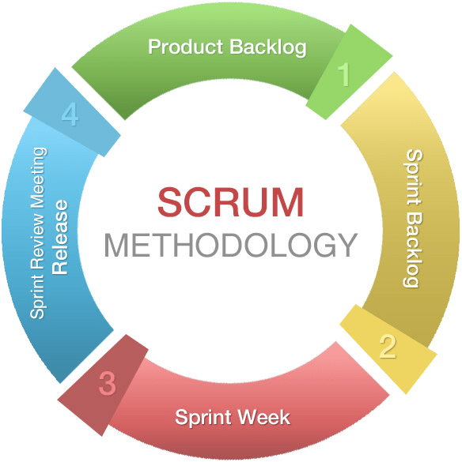
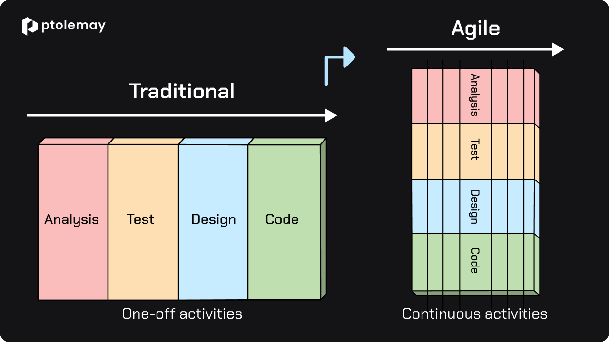
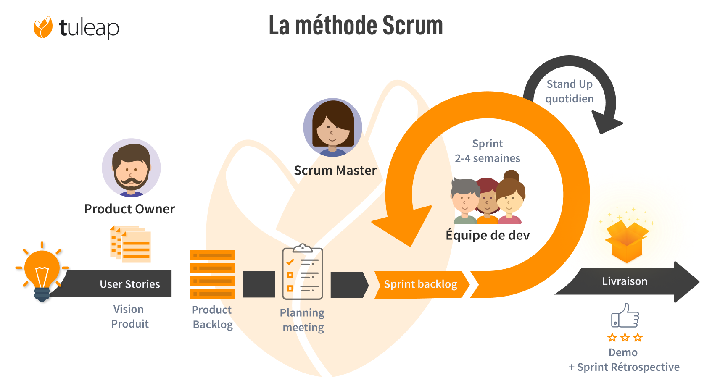
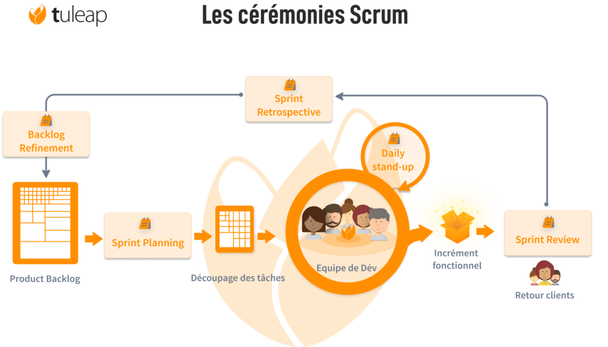
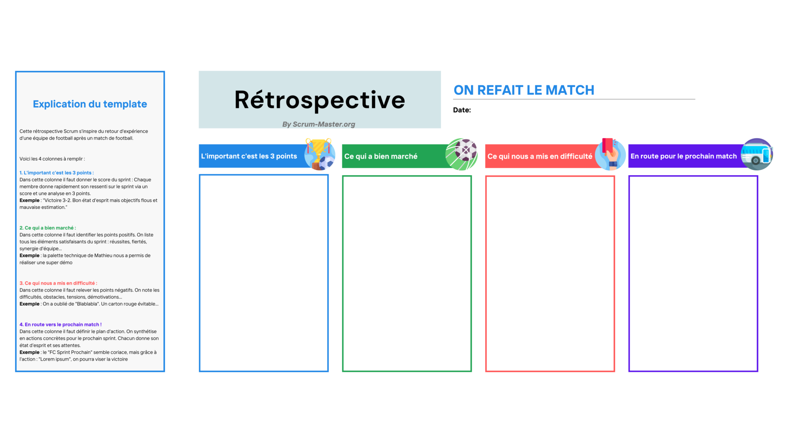

class: center, middle # Conception et gestion de projet : # SCRUM <p></p> --- ## Qu'est-ce que SCRUM ? Développement **itératif** et **progressif** du logiciel tout en maintenant une liste totalement transparente de **mises à jour** ou de **corrections**. <div style="text-align:center; margin-top:50px"> <p></p> </div> --- ## SCRUM <div style="text-align:center; margin-top:50px"> <p></p> </div> --- ## SCRUM <div style="text-align:center; margin-top:50px"> <p></p> </div> --- ## SCRUM : items Au lancement du projet, on découpe le système en items : * **les tâches techniques** : * créer la base de données * initialiser le git * etc. * **les user stories** : * en tant qu'utilisateur, je souhaite pouvoir consulter la liste des produits * en tant qu'administrateur, je souhaite pouvoir enregistrer des nouveaux utilisateurs * etc. --- ## SCRUM : product backlog Les user stories constituent le product backlog dans lequel ces user stories sont priorisées. On détermine également l'effort nécessaire . Exemples : <table> <tbody> <tr> <th>User story</th> <th>Priorité</th> <th>Effort</th> </tr> <tr> <td>En tant qu'utilisateur, je souhaite pouvoir consulter la liste des produits</td> <td>100</td> <td>10</td> </tr> <tr> <td>En tant qu'administrateur, je souhaite pouvoir enregistrer des nouveaux utilisateurs</td> <td>30</td> <td>50</td> </tr> <tr> <td>...</td> <td>...</td> </tr> </tbody> </table> --- ## SCRUM : sprint * Un **sprint** est une itération d'une durée fixe (à déterminer au début du projet). * À chaque fin de sprint correspond un **livrable**. --- ## SCRUM : sprint planning * Le **sprint planning** se déroule avant chaque sprint. * Il s'agit d'une réunion à laquelle participe toute l'équipe. * On discute de ce que l'équipe de dév. pourra livrer en fin de sprint et comment l'équipe va y arriver. --- ## SCRUM : sprint backlog * À la fin du sprint planning, les items sélectionnés du product backlog constituent le **sprint backlog**. --- ## SCRUM : daily scrum * Le *daily scrum* se déroule tous les jours pendant un sprint * On parle de : * ce qui a été fait durant les 24 dernières heures * ce qui va être fait durant les 24 prochaines heures * partage de connaissances, etc. --- ## SCRUM : sprint review * Le **sprint review** se déroule en fin de sprint * On fait le point sur ce qui a été fait durant le sprint * On fait le point sur ce qui n'a pas été fait durant le sprint * Démonstration éventuelle --- ## SCRUM : sprint retrospective * Le sprint retrospective se déroule juste après le sprint review <div style="text-align:center; margin-top:50px"> <p></p> </div> --- ## SCRUM : itération Et après que fait-on ? <br> -- **On recommence !!** --- ## Sources des images * https://www.momentup.com/blog/what-is-agile-scrum-methodology-and-how-can-it-help-your-startup * https://www.tuleap.org/fr/agile/comprendre-methode-agile-scrum-10-minutes